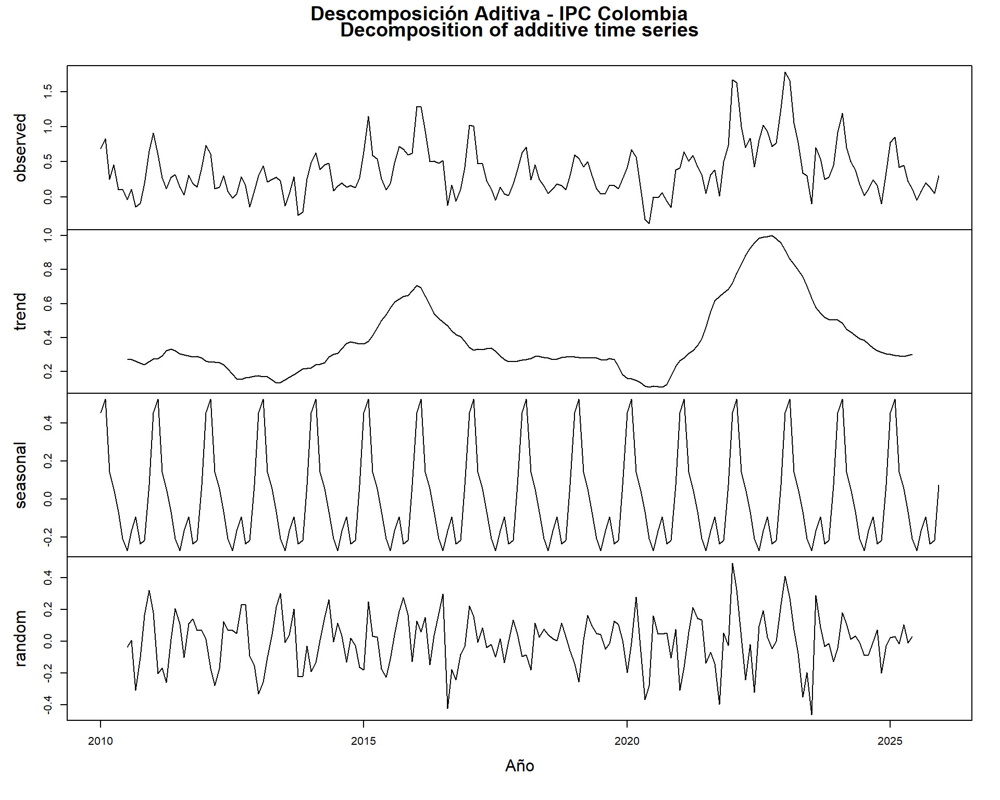
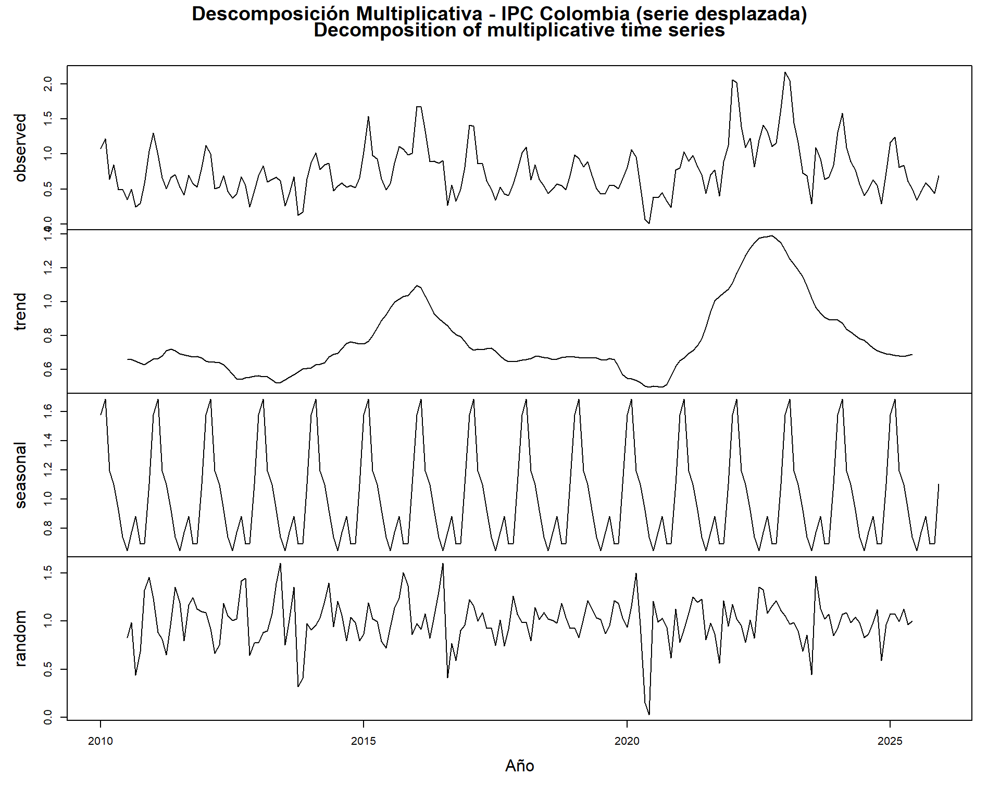
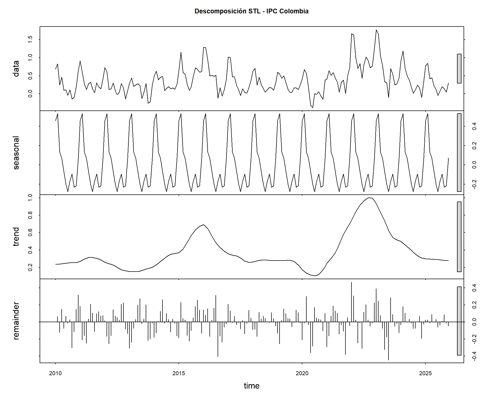
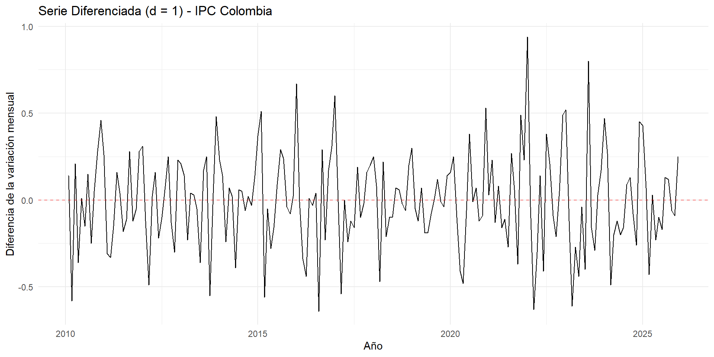
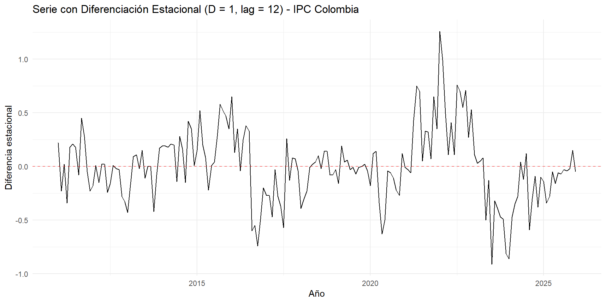
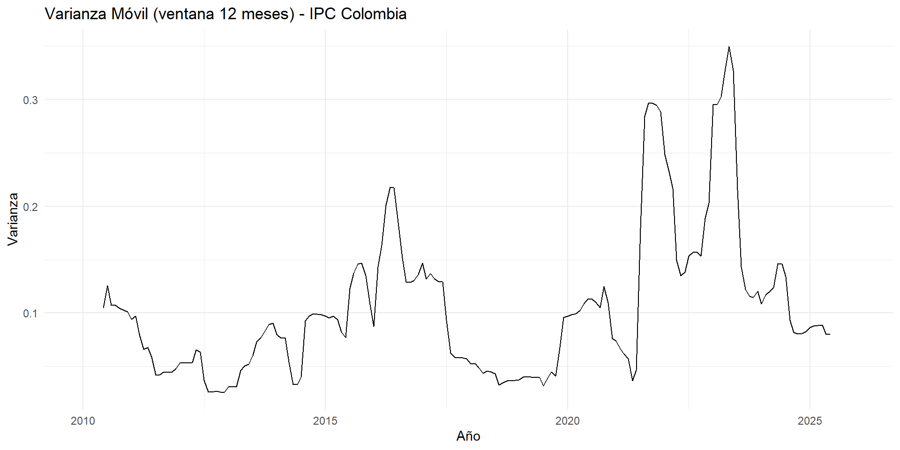
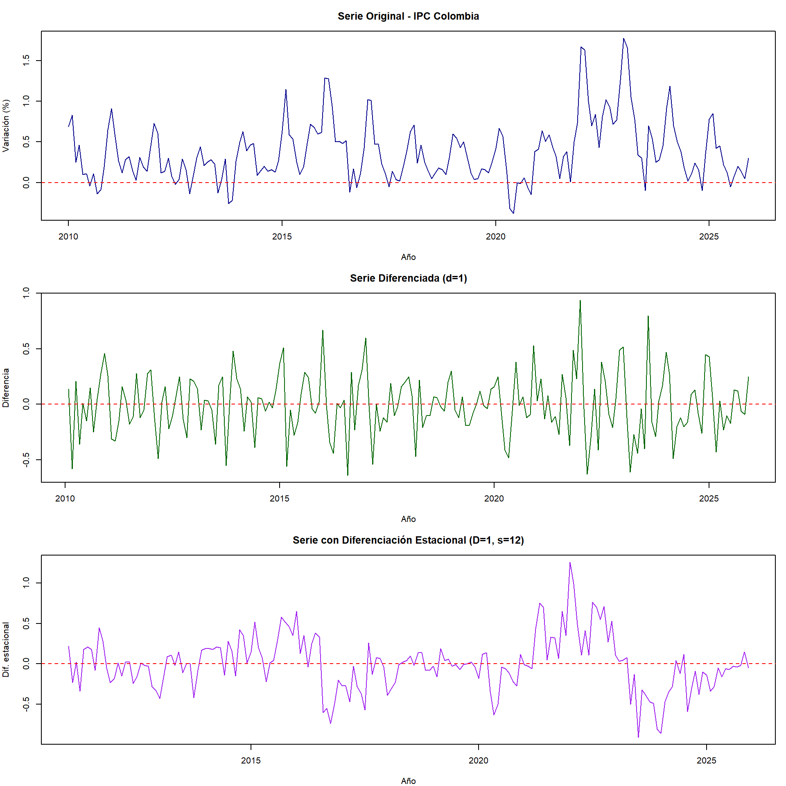

Capítulo 2 Descomposición, Estacionariedad y Diferenciación
2.1 Descomposición de la serie
La descomposición permite separar la serie en sus componentes fundamentales: tendencia, estacionalidad y componente residual (aleatorio). Realizamos tanto la descomposición aditiva como la multiplicativa.
2.1.1 Descomposición aditiva
decomp_add <- decompose(ipc_ts, type = "additive")
plot(decomp_add, xlab = "Año")
title(main = "Descomposición Aditiva - IPC Colombia", outer = TRUE, line = -1)
2.1.2 Descomposición multiplicativa
# La serie tiene valores negativos, así que desplazamos para la multiplicativa
ipc_ts_pos <- ipc_ts + abs(min(ipc_ts)) + 0.01
decomp_mult <- decompose(ipc_ts_pos, type = "multiplicative")
plot(decomp_mult, xlab = "Año")
title(main = "Descomposición Multiplicativa - IPC Colombia (serie desplazada)",
outer = TRUE, line = -1)
2.1.3 Descomposición STL
La descomposición STL (Seasonal and Trend decomposition using Loess) es más robusta que los métodos clásicos, ya que permite que el componente estacional varíe en el tiempo:
stl_decomp <- stl(ipc_ts, s.window = "periodic")
plot(stl_decomp, main = "Descomposición STL - IPC Colombia")
# Extraer componentes
tendencia <- stl_decomp$time.series[, "trend"]
estacional <- stl_decomp$time.series[, "seasonal"]
residual <- stl_decomp$time.series[, "remainder"]
cat("Resumen de la Tendencia:\n")## Resumen de la Tendencia:## Min. 1st Qu. Median Mean 3rd Qu. Max.
## 0.1028 0.2504 0.2936 0.3752 0.4573 1.0002##
## Resumen del Componente Estacional:## Min. 1st Qu. Median Mean 3rd Qu. Max.
## -0.27655 -0.20633 -0.08165 0.00000 0.08634 0.52876##
## Resumen de los Residuos:## Min. 1st Qu. Median Mean 3rd Qu. Max.
## -0.4462133 -0.0921695 0.0080738 0.0001904 0.1002556 0.4695622Interpretación de la descomposición:
- Tendencia: Se observa claramente el período de inflación baja entre 2017-2019 (tendencia cercana a 0.2%), el valle durante la pandemia de 2020, y el marcado incremento durante 2022-2023 (tendencia superior a 0.8%). Desde 2024, la tendencia muestra una normalización gradual.
- Estacionalidad: El patrón estacional se confirma: picos en enero-febrero y valles en julio. La magnitud del componente estacional se mantiene relativamente estable.
- Residuos: Los residuos muestran mayor variabilidad en los períodos de choques (2020 y 2022-2023), lo cual es esperable dado que estos eventos generaron desviaciones atípicas respecto al comportamiento histórico.
Se elige el modelo aditivo como el más apropiado para esta serie, dado que la amplitud del componente estacional no parece variar proporcionalmente con el nivel de la tendencia (la estacionalidad mantiene una magnitud similar independientemente de si la inflación es alta o baja).
2.2 Pruebas de Estacionariedad
Una serie es estacionaria si sus propiedades estadísticas (media, varianza, autocorrelación) no cambian con el tiempo. La estacionariedad es un requisito fundamental para la mayoría de modelos de series de tiempo.
2.2.1 Prueba Augmented Dickey-Fuller (ADF)
La hipótesis nula de la prueba ADF es que la serie tiene raíz unitaria (no es estacionaria):
## Warning in adf.test(ipc_ts): p-value smaller than printed p-value## Prueba Augmented Dickey-Fuller## Estadístico: -4.779951## Valor p: 0.01## Rezagos usados: 5if(adf_result$p.value < 0.05) {
cat("\nConclusión: Se rechaza H0. La serie ES estacionaria (p < 0.05).\n")
} else {
cat("\nConclusión: No se rechaza H0. La serie NO es estacionaria (p >= 0.05).\n")
}##
## Conclusión: Se rechaza H0. La serie ES estacionaria (p < 0.05).2.2.2 Prueba KPSS
La prueba KPSS tiene la hipótesis nula inversa: la serie es estacionaria. Esto nos da una segunda perspectiva:
## Prueba KPSS## Estadístico: 0.3572286## Valor p: 0.0955911if(kpss_result$p.value < 0.05) {
cat("\nConclusión: Se rechaza H0. La serie NO es estacionaria (p < 0.05).\n")
} else {
cat("\nConclusión: No se rechaza H0. La serie ES estacionaria (p >= 0.05).\n")
}##
## Conclusión: No se rechaza H0. La serie ES estacionaria (p >= 0.05).2.2.3 Número de diferencias requeridas
La función ndiffs() del paquete forecast estima automáticamente el número de diferencias ordinarias necesarias, y nsdiffs() las diferencias estacionales:
n_diff <- ndiffs(ipc_ts)
n_sdiff <- nsdiffs(ipc_ts)
cat("Número de diferencias ordinarias sugeridas:", n_diff, "\n")## Número de diferencias ordinarias sugeridas: 0## Número de diferencias estacionales sugeridas: 12.3 Diferenciación
Aplicamos la diferenciación según lo sugerido por las pruebas anteriores, para hacer la serie estacionaria.
2.3.1 Diferenciación ordinaria (d = 1)
ipc_diff <- diff(ipc_ts, differences = 1)
autoplot(ipc_diff) +
ggtitle("Serie Diferenciada (d = 1) - IPC Colombia") +
xlab("Año") +
ylab("Diferencia de la variación mensual") +
theme_minimal() +
geom_hline(yintercept = 0, linetype = "dashed", color = "red", alpha = 0.5)
2.3.2 Verificación de estacionariedad de la serie diferenciada
## Warning in adf.test(ipc_diff): p-value smaller than printed p-value## Prueba ADF sobre la serie diferenciada:## Estadístico: -8.439761## Valor p: 0.01if(adf_diff$p.value < 0.05) {
cat("Conclusión: La serie diferenciada ES estacionaria.\n")
} else {
cat("Conclusión: La serie diferenciada NO es estacionaria, se requiere más diferenciación.\n")
}## Conclusión: La serie diferenciada ES estacionaria.## Warning in kpss.test(ipc_diff, null = "Level"): p-value greater than printed p-value##
## Prueba KPSS sobre la serie diferenciada:## Estadístico: 0.01799747## Valor p: 0.1if(kpss_diff$p.value < 0.05) {
cat("Conclusión (KPSS): La serie diferenciada NO es estacionaria.\n")
} else {
cat("Conclusión (KPSS): La serie diferenciada ES estacionaria.\n")
}## Conclusión (KPSS): La serie diferenciada ES estacionaria.2.3.3 Diferenciación estacional (D = 1, lag = 12)
ipc_sdiff <- diff(ipc_ts, lag = 12, differences = 1)
autoplot(ipc_sdiff) +
ggtitle("Serie con Diferenciación Estacional (D = 1, lag = 12) - IPC Colombia") +
xlab("Año") +
ylab("Diferencia estacional") +
theme_minimal() +
geom_hline(yintercept = 0, linetype = "dashed", color = "red", alpha = 0.5)
## Prueba ADF sobre la serie con diferenciación estacional:## Estadístico: -2.78958## Valor p: 0.2462282.4 Transformaciones
2.4.1 Evaluación de la necesidad de transformación
Para determinar si es necesaria una transformación (como la de Box-Cox) para estabilizar la varianza, examinamos la relación entre el nivel y la dispersión de la serie:
# Como la serie tiene valores negativos, evaluamos si una transformación es viable
cat("Rango de la serie:", range(ipc_ts), "\n")## Rango de la serie: -0.38 1.78## La serie contiene valores negativos: TRUEcat("\nDado que la variación mensual del IPC incluye valores negativos (meses con",
"deflación), la transformación Box-Cox clásica no es directamente aplicable.\n")##
## Dado que la variación mensual del IPC incluye valores negativos (meses con deflación), la transformación Box-Cox clásica no es directamente aplicable.# Varianza móvil para evaluar heterocedasticidad
library(zoo)
var_movil <- rollapply(ipc_ts, width = 12, FUN = var, fill = NA, align = "center")
autoplot(ts(var_movil, start = c(2010, 1), frequency = 12)) +
ggtitle("Varianza Móvil (ventana 12 meses) - IPC Colombia") +
xlab("Año") +
ylab("Varianza") +
theme_minimal()
Justificación sobre transformaciones:
La varianza móvil muestra que la dispersión de la serie no es constante a lo largo del tiempo: es relativamente baja entre 2017-2019, se incrementa en 2020 por la pandemia, y alcanza sus valores máximos en 2022-2023 durante el choque inflacionario. Sin embargo, decidimos no aplicar una transformación Box-Cox por las siguientes razones:
- Valores negativos: La serie contiene meses con deflación (variaciones negativas), lo cual impide aplicar la transformación logarítmica o Box-Cox directamente sin un desplazamiento artificial.
- La diferenciación es suficiente: Las pruebas de estacionariedad muestran que con una diferenciación ordinaria (y eventualmente estacional), la serie se vuelve estacionaria en media.
- Interpretabilidad: Mantener la serie sin transformar preserva la interpretación directa en puntos porcentuales.
2.5 Resumen del preprocesamiento
par(mfrow = c(3, 1), mar = c(4, 4, 3, 1))
plot(ipc_ts, main = "Serie Original - IPC Colombia",
ylab = "Variación (%)", xlab = "Año", col = "darkblue")
abline(h = 0, lty = 2, col = "red")
plot(ipc_diff, main = "Serie Diferenciada (d=1)",
ylab = "Diferencia", xlab = "Año", col = "darkgreen")
abline(h = 0, lty = 2, col = "red")
plot(ipc_sdiff, main = "Serie con Diferenciación Estacional (D=1, s=12)",
ylab = "Dif. estacional", xlab = "Año", col = "purple")
abline(h = 0, lty = 2, col = "red")
Conclusiones del preprocesamiento:
- La serie original del IPC mensual de Colombia presenta tendencia, estacionalidad y varianza no constante, lo que confirma que no es estacionaria en su forma original.
- La descomposición STL permite visualizar claramente estos tres componentes y confirma que el modelo aditivo es apropiado.
- Las pruebas ADF y KPSS confirman la no estacionariedad de la serie original y la efectividad de la diferenciación para alcanzar estacionariedad.
- Se recomienda una diferenciación ordinaria (d=1) y posiblemente una diferenciación estacional (D=1) para su uso en modelos SARIMA futuros.
- No se aplica transformación Box-Cox debido a la presencia de valores negativos y porque la diferenciación resulta suficiente para estabilizar la serie.
Estos resultados sientan las bases para la etapa de modelado (Módulo 2), donde se seleccionará el modelo SARIMA más adecuado con base en los patrones identificados en el ACF y PACF de la serie diferenciada.